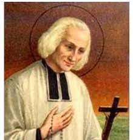
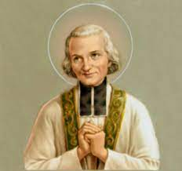
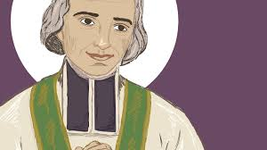

En el siglo XVIII, en una pequeña aldea en Francia, vivía San Juan Vianney, conocido como el Cura de Ars. Era un sacerdote humilde y compasivo, cuyo amor por Dios y las personas lo convirtió en un faro de luz espiritual para su comunidad.
Había una mujer en la aldea llamada Marguerite, cuyo corazón estaba roto por la pena. Había perdido a su hijo pequeño en un trágico accidente y su dolor era inmenso. Ella se acercó al Cura de Ars en busca de consuelo, pero las palabras parecían inadecuadas para expresar su sufrimiento.
San Juan Vianney la miró con ojos llenos de compasión y la invitó a sentarse junto a él. No dijo nada al principio, simplemente sostuvo su mano en silencio mientras Marguerite lloraba. Se quedó con ella el tiempo que necesitara, compartiendo en silencio su dolor y su pesar.
Finalmente, después de un largo rato, el Cura de Ars habló con voz suave y amorosa. Compartió palabras de consuelo y esperanza, recordándole el amor infinito de Dios y la promesa de vida eterna. Marguerite encontró un consuelo en esas palabras que nunca antes había sentido. El Cura de Ars no solo compartió su sabiduría espiritual, sino que también compartió el peso de su dolor, cargándolo con amor y compasión.
A partir de ese día, Marguerite encontró un sentido renovado de paz y fortaleza en su fe. El Cura de Ars la había ayudado a encontrar la luz en medio de su oscuridad, a través de su amor incondicional y su capacidad para compartir la carga de su sufrimiento.
